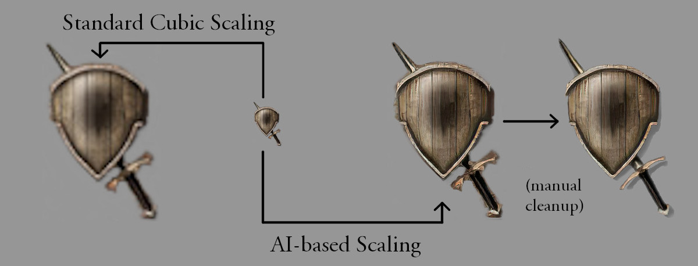
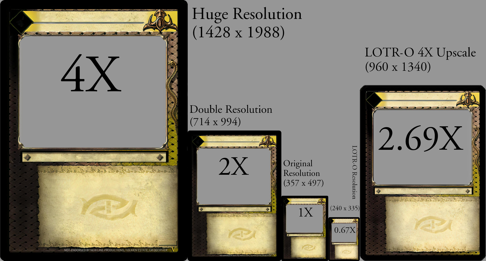

Lord of the Rings TCG Card Templates
The backbone of high quality virtual card images.
Building Blocks for the Cards of Your Dreams
For many years, players hoping to make their own dream cards were limited to poorly-formatted text posts in phpbb forums. The only avenue available to anyone looking to make professional-looking cards was to try and painstakingly photoshop blank card templates from the low-res card images floating around online, and there were inevitably blemishes on each one that called it out as a poor-quality chop job.
Fortunately, our AI overlords are here to save the day! With modern AI scaling techniques, the poor-quality low-resolution hack jobs could be scaled up to an impressive degree of detail.
For instance, take a look at the image below:

Both of these images are scaled 4x. The standard scaling on the left is, as you can see, blurry and not very detailed. The one on the right though, whew. Some manual work was needed to fix some of the detail artifacts (which were a result of the very poorly cropped original), but it is by and large extremely impressive.
So how did the standard card templates fare? Well, click through on this image and zoom in. Really zoom. Keep going. Yeah. It's damn impressive.

(If you don't have AI on your radar as Something You Should Pay Attention To, I hope this post nudges you in that direction at least a little bit.)
Where do I get them?
See below for download links:
| Template Size | Usage | Link |
|---|---|---|
| Original (357 x 497) | Prototyping, low resolution applications | Download here. |
| Double (714 x 994) | Sharing, filling the whole screen | Download here. |
| Huge (1428 x 1988) | Printing, filling your hard drive | Download here. |
| Fonts | For making text | Download here. |
Seriously, guys, Huge is huge. I promise you probably don't need it.
How do I use them?
Use them in your photoshopping suite of choice, or use them with the card generator to create ready-made cards without any design experience. Note that if you download the card generator zip package, it already contains Double and Original size templates; you will only need to insert Huge from above if you determine it is necessary.
Contents
Here is what is contained in each template zip:
- Character and Modifier layout templates for each of the LotR-TCG cultures.
- Site templates for standard sites and sanctuaries.
- Isolated icons for strength, vitality, resistance, signets, site number, site block, site arrows, and follower highlight.
- "Positioned" versions of the above icons that are intended to be overlayed without needing to tweak the position of each icon manually.
- Artifact overlay (golden culture icon and golden type bar) for every culture, including those that never had artifacts in the released game.
- Isolated and positioned culture and twilight icons, for use with full art cards (think The One Ring, but for any card).
- "Mockup" version of all of the above, which looks like someone drew everything in crayon. (These are used by the PC to make it abundantly clear that the card is not ready yet.)
And in the Fonts package:
- LOTR_TCG-Regular: used for standard game text on the face of the card. Includes culture and twilight symbols replacing certain characters (see the included instructions.txt for details)
- LOTR_TCG-Italic: used for helper text.
- LOTR_TCG-Bold: used for keywords.
- LOTR_TCG-BoldItalic: not used by the game, but here for completion's sake.
- LOTR_TCG-Icons-Bold: used for the numbers on stat and twilight icons.
- LOTR_TCG-Lore: used for, well, lore text.
- LOTR_TCG_Title: used for the title, subtitle, and type bar.
- LOTR_TCG-Promo: used the promo text sometimes used below lore.